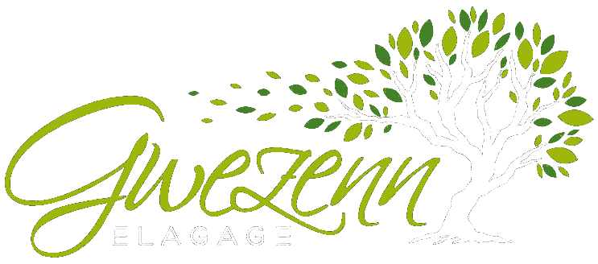

Au service de vos arbres
Au service de vos arbres
Gwezenn Elagage est une jeune entreprise créer en 2016, situé en Centre Bretagne, à Plémet (22).
Au sein de cette société évolue un binôme de deux professionnels diplômés (contrat de spécialisation de tailles et soins des arbres).
Intervenant sur la Bretagne Camille et Jérôme vous proposent un service de qualité dans le respect de vos arbres et de vos problématiques.

Nous nous occupons également de faire l’évacuation de vos déchets
L'élagage consiste a orienter ou limiter le développement d'un arbre. On appelle généralement élagage l'arboriculture ornementale.
Nous disposons d’un panel de tailles correspondantes aux différentes problématiques que vous pouvez rencontrer.
Nous travaillons dans le respect de l’arbre et pratiquons une taille raisonnée.
les différentes tailles
Nous vous proposons également des tailles d’arbustes, tonte de pelouses et de haies.h3
Gwezenn Elagage
tel: 06 xx xx xx xx
email: gwezenn.elegage@mailoo.org